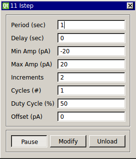

Current (I) Step
Requirements: none
Limitations: none noted

This plugin allows you to deliver a series of current step commands.
Output Channels
- output(0) – “Iout” : Step current command in amperes. Connect to the amplifer external signal input.
Parameters
- Period (s): period of step input
- Delay (s): delay between step commands
- Min Amp (pA): minimum amplitude
- Max Amp (pA): maximum amplitude
- Increments: number of steps to take between the minimum and maximum amplitude
- Cycles (#): number of times to repeat step command
- Duty Cycle (%): portion of the period during which to apply current of specified amplitude
- Offset (pA): additional DC current to add